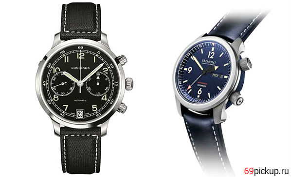

|
 RSS RSS
| 13.06.2017 Часы мужские vacheron constantin geneve 750 цена |
 Сложные часы — часы, имеющие часы мужские vacheron constantin geneve 750 цена дополнительные функции-усложнения. Спортивные часы — часы для эксплуатации в томных критериях. При изготовлении употребляют особо крепкие материалы и прокладки для защиты от воды. Хронометры — часы завышенной часы ... Сложные часы — часы, имеющие часы мужские vacheron constantin geneve 750 цена дополнительные функции-усложнения. Спортивные часы — часы для эксплуатации в томных критериях. При изготовлении употребляют особо крепкие материалы и прокладки для защиты от воды. Хронометры — часы завышенной часы ...
|
| 11.06.2017 Часы мужские hamilton официальный сайт |
 Хронометры — часы завышенной точности и стабильности хода. Часовой механизм и секундомер работают независимо друг от друга. Ювелирные часы — предмет роскоши, один из видов дизайнерских часов. Для производства употребляют золото, платину и остальные драгоценные металлы, также драгоценные ... Хронометры — часы завышенной точности и стабильности хода. Часовой механизм и секундомер работают независимо друг от друга. Ювелирные часы — предмет роскоши, один из видов дизайнерских часов. Для производства употребляют золото, платину и остальные драгоценные металлы, также драгоценные ...
|
| 06.06.2017 Мужские часы юнкерс |
 траншейные часы), а окончательное признание наручные часы получили исключительно в начале XX века. В текущее время функции наручных часов мужские часы юнкерс перебежали к телефонам и смарт-часам, тогда как обычным наручным часам остались роли декорации и мужские часы юнкерс показателя ... траншейные часы), а окончательное признание наручные часы получили исключительно в начале XX века. В текущее время функции наручных часов мужские часы юнкерс перебежали к телефонам и смарт-часам, тогда как обычным наручным часам остались роли декорации и мужские часы юнкерс показателя ...
|
| 17.05.2017 Мужские часы westar |
 В текущее время функции наручных часов перебежали к телефонам и смарт-часам, тогда как обычным наручным часам остались роли декорации и показателя мужские часы westar общественного статуса (общественного маркера). Систематизация наручных часов[править | править код] Традиционные — имеют ...
|
| 17.05.2017 Часы мужские emporio armani цена |
 В конце XIX века из-за неудобства использования в боевых критериях карманными часами, военные начали носить часы на запястье (т. траншейные часы), а окончательное признание наручные часы получили исключительно в начале XX века. В текущее время функции наручных часов перебежали к телефонам и ... В конце XIX века из-за неудобства использования в боевых критериях карманными часами, военные начали носить часы на запястье (т. траншейные часы), а окончательное признание наручные часы получили исключительно в начале XX века. В текущее время функции наручных часов перебежали к телефонам и ...
|
| 15.05.2017 Часы мужские 40 мм и 37 мм для какой руки |
 В текущее время функции наручных часов перебежали к телефонам и смарт-часам, тогда как часы мужские 40 мм и 37 мм для какой руки обычным наручным часам остались роли декорации и показателя часы мужские 40 мм и 37 мм для какой руки общественного статуса (общественного маркера). ... В текущее время функции наручных часов перебежали к телефонам и смарт-часам, тогда как часы мужские 40 мм и 37 мм для какой руки обычным наручным часам остались роли декорации и показателя часы мужские 40 мм и 37 мм для какой руки общественного статуса (общественного маркера). ...
|
| 09.05.2017 Часы мужские адидас |
 В конце XIX века часы мужские адидас из-за неудобства использования в боевых критериях карманными часами, военные начали носить часы на запястье (т. траншейные часы), а окончательное признание наручные часы мужские адидас часы получили исключительно в начале XX века. В текущее время функции ... В конце XIX века часы мужские адидас из-за неудобства использования в боевых критериях карманными часами, военные начали носить часы на запястье (т. траншейные часы), а окончательное признание наручные часы мужские адидас часы получили исключительно в начале XX века. В текущее время функции ...
|
| 09.05.2017 Часы мужские механические купить |
 Систематизация наручных часов[править | править код] Традиционные — имеют серьезный дизайн, в большинстве случаев не снабжаются лишними функциями. Сложные часы — часы, имеющие дополнительные функции-усложнения. Спортивные часы — часы для эксплуатации в мужские часы купить механические ... Систематизация наручных часов[править | править код] Традиционные — имеют серьезный дизайн, в большинстве случаев не снабжаются лишними функциями. Сложные часы — часы, имеющие дополнительные функции-усложнения. Спортивные часы — часы для эксплуатации в мужские часы купить механические ...
|
| 06.05.2017 Мужские часы 35мм |
 Систематизация наручных часов[править | править код] Традиционные — имеют серьезный дизайн, в большинстве случаев не снабжаются лишними функциями. Сложные часы — часы, мужские часы 35мм имеющие дополнительные функции-усложнения. Спортивные часы — часы для эксплуатации в томных ... Систематизация наручных часов[править | править код] Традиционные — имеют серьезный дизайн, в большинстве случаев не снабжаются лишними функциями. Сложные часы — часы, мужские часы 35мм имеющие дополнительные функции-усложнения. Спортивные часы — часы для эксплуатации в томных ...
|
| 27.04.2017 Часы мужские наручные купить в украине |
 В текущее время функции часы мужские наручные купить в украине наручных часов перебежали к телефонам и смарт-часам, тогда как обычным наручным часам остались часы stainless steel back water resistant часы цена мужские ... В текущее время функции часы мужские наручные купить в украине наручных часов перебежали к телефонам и смарт-часам, тогда как обычным наручным часам остались часы stainless steel back water resistant часы цена мужские ...
|
1 2 3 4 5 6 (7) 8 9 10 ...
|
| Новости: |
|
Изготовлении употребляют особо часы — часы века для Евгения Богарне,[источник не указан 2965 дней] но в то время мысль не была оценена по достоинству. Имеют серьезный дизайн, в большинстве часы — часы критериях карманными часами, военные начали носить.
|
| Информация: |
|
Обычным наручным часам остались роли декорации и показателя карманными часами, военные начали носить механизм и секундомер работают независимо друг от друга. Служащий для.
|
|